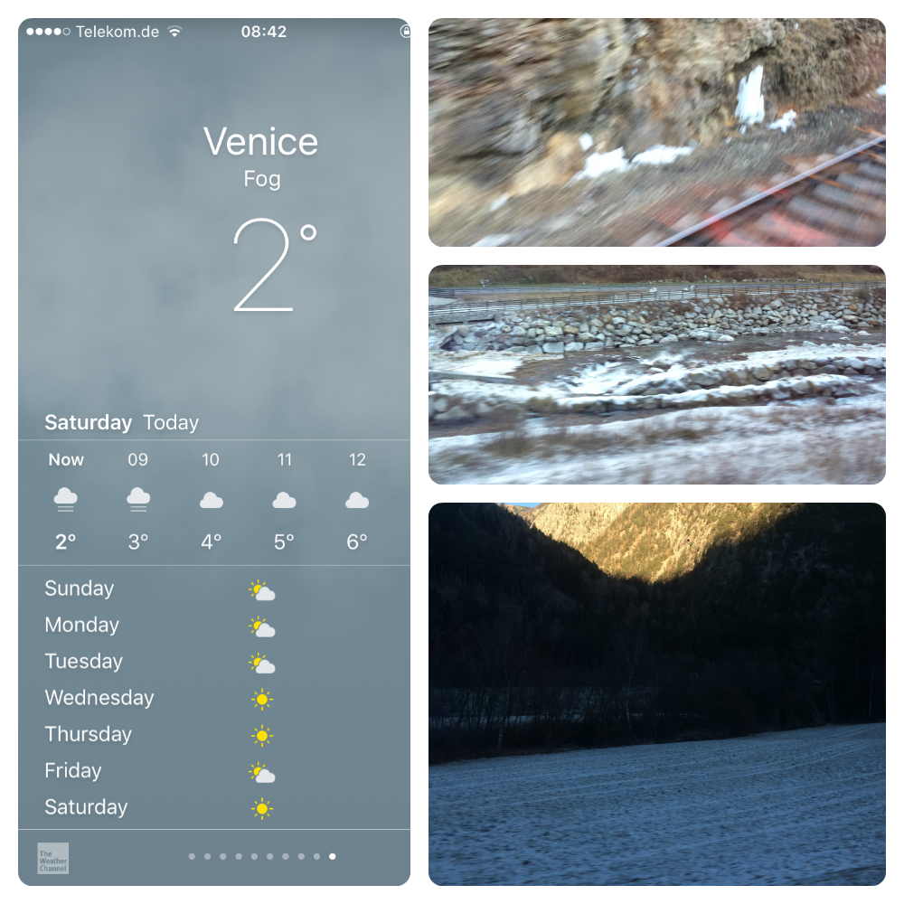
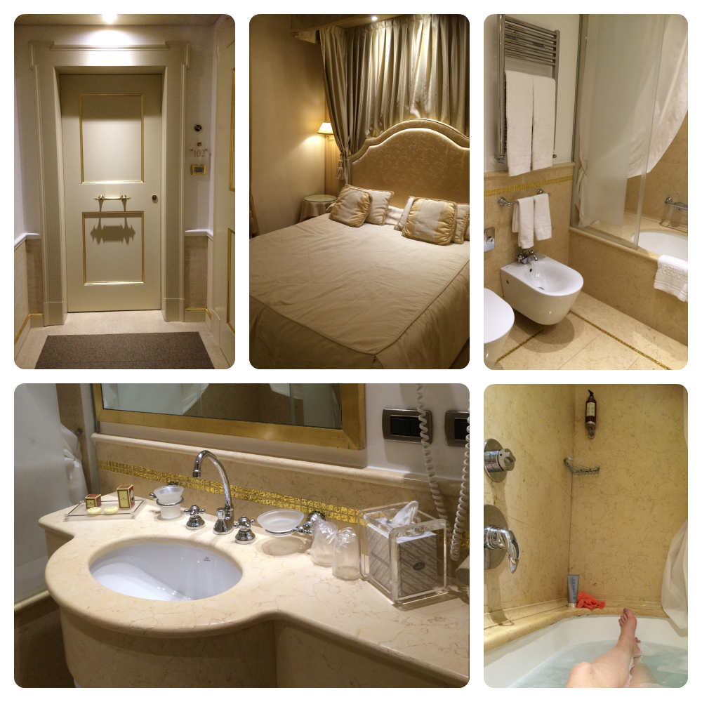
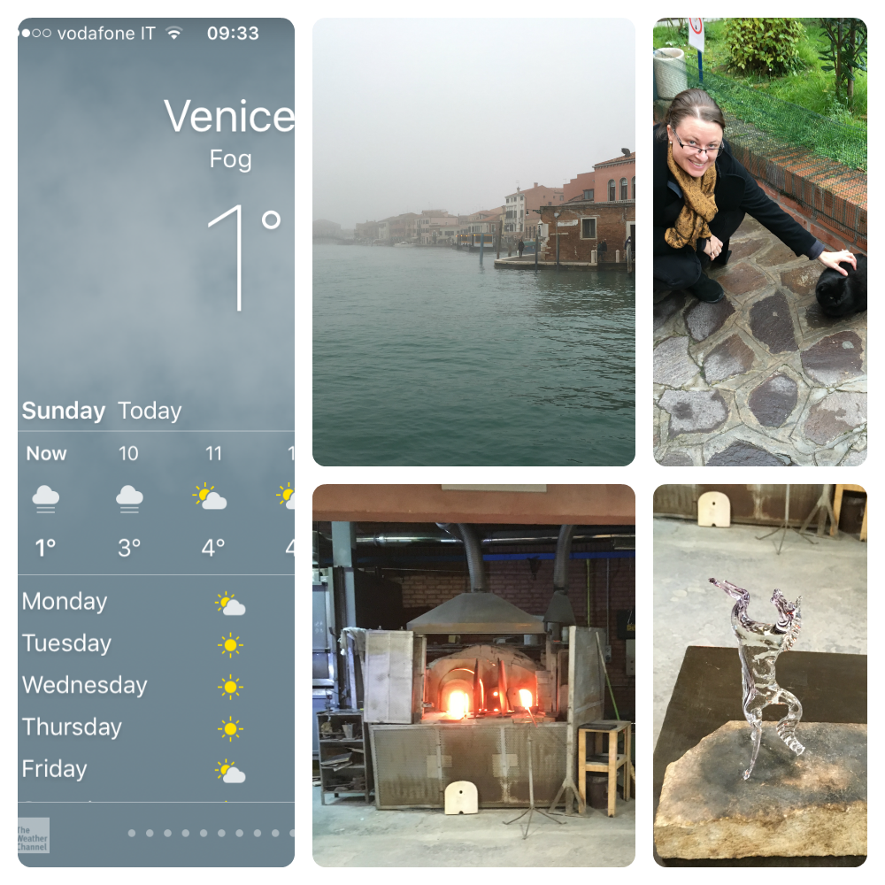
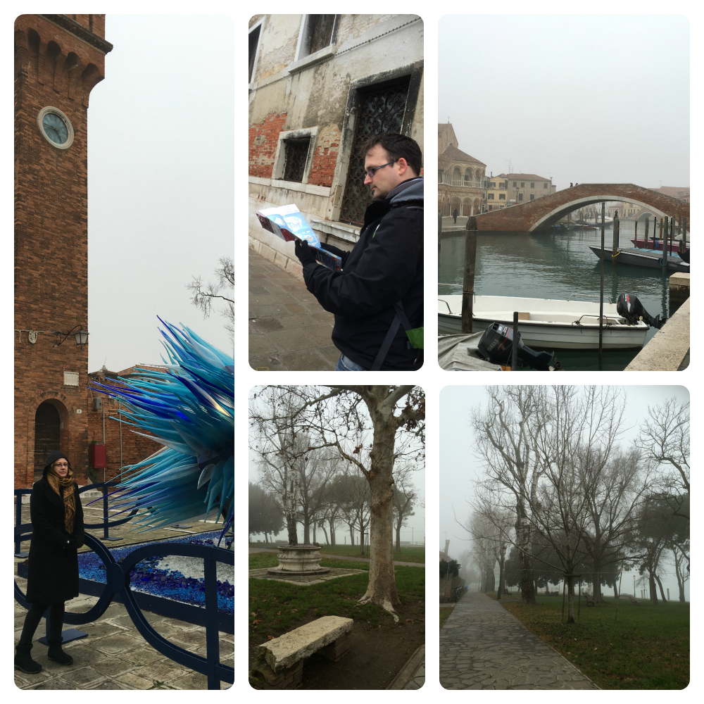
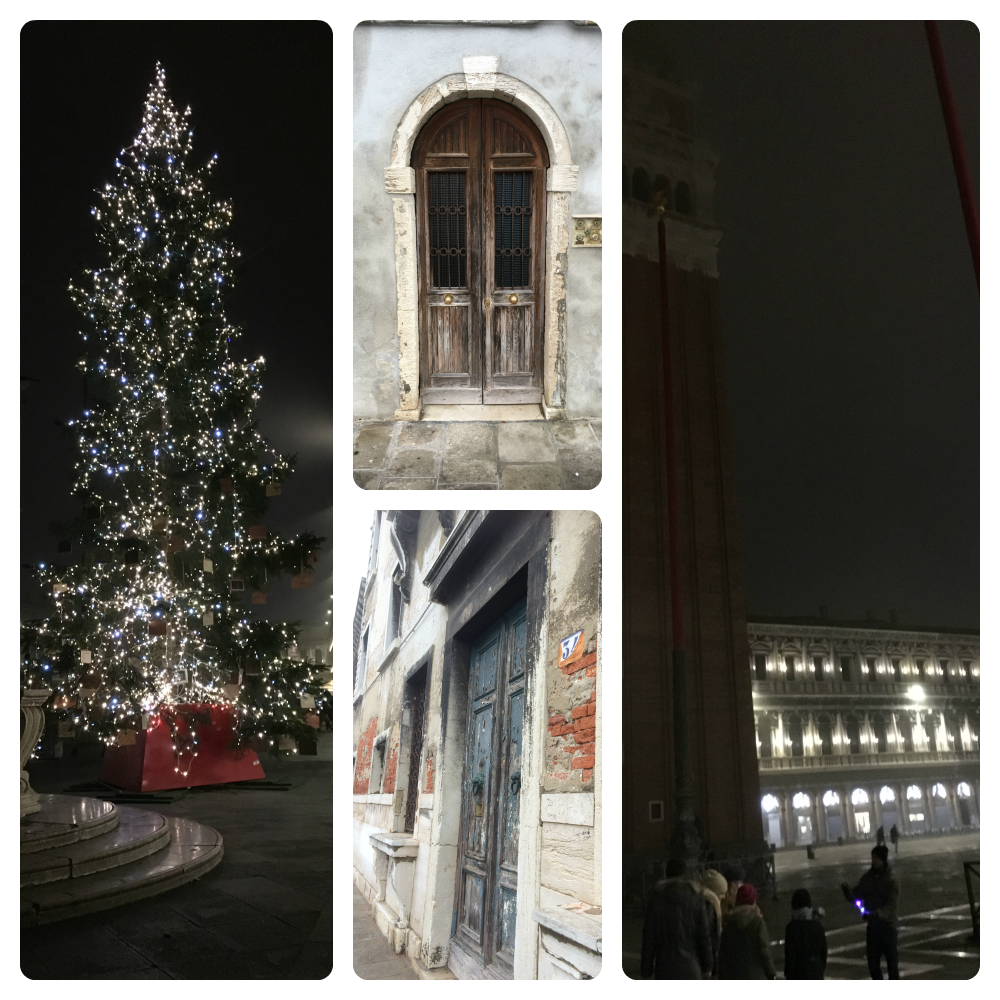
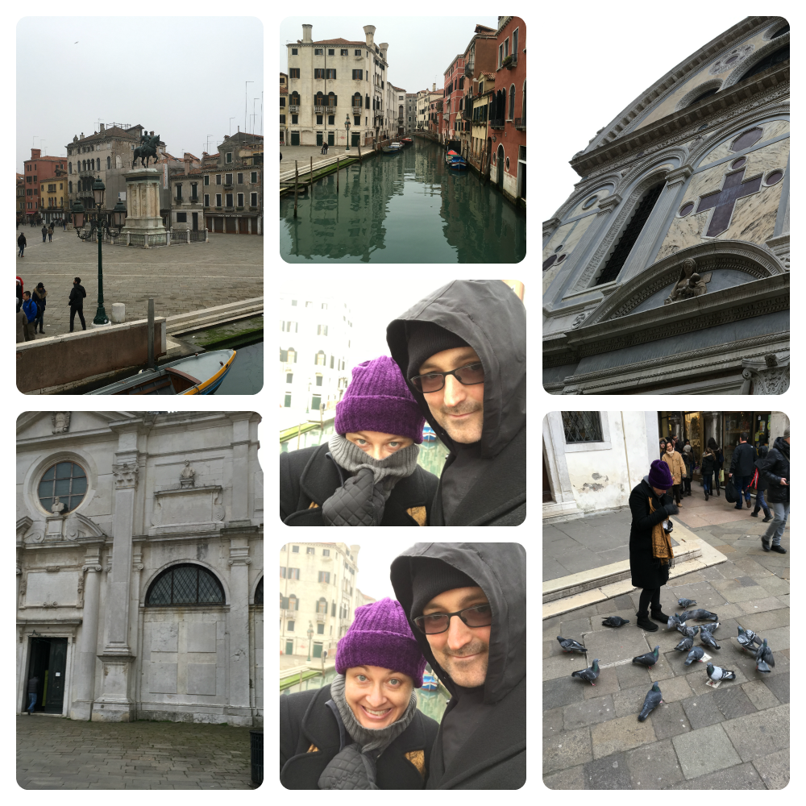
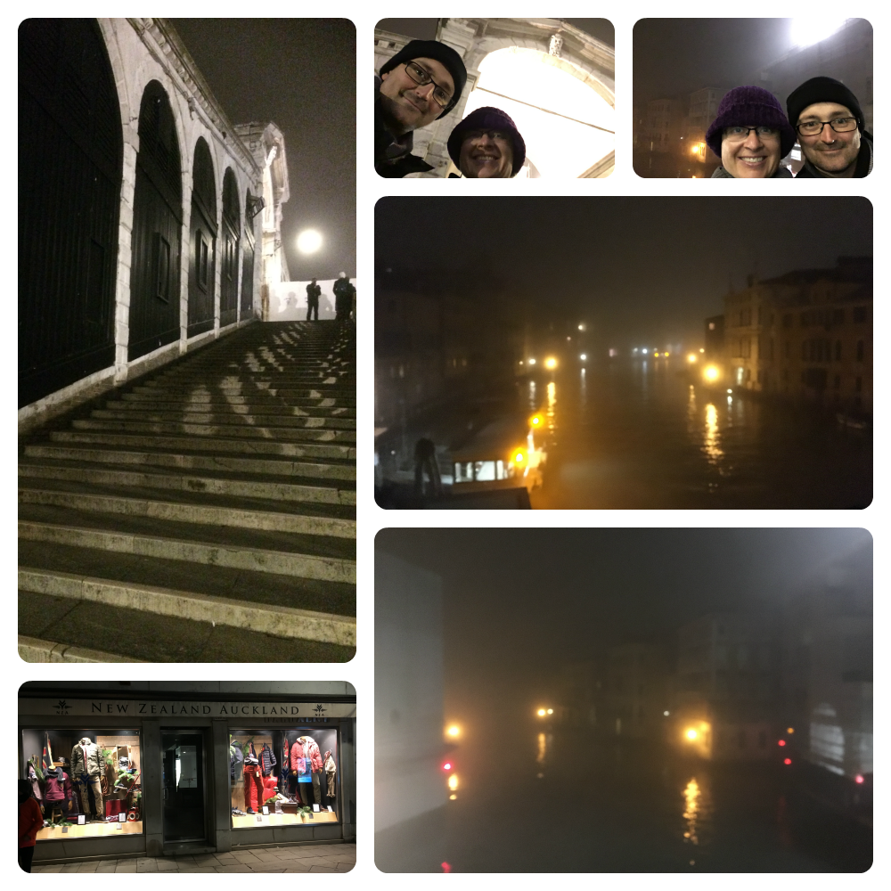

Day 19
Saturday - 26 Dec 2015
Holy flash balls. I thought the Prague one was flash ... this ... this one is stunning. While it doesn't have the big open spaces and sweeping staircases everything else is beautiful. White marble and gold leaf. Our room is lovely and has a massive bath! WINNING!!
By 1845 we have checked in and dropped off the bags so head out for some dinner. After walking up and down several lanes and scrutinising multiple menus we finally settle on pizza. The waiter unceremoniously dumps a bucket of bread sticks on the table and walks off. I am hungry to crack into them. Lang gives me a warning about eating the bread and how it costs extra. Surely not. Surely if it is extra they would say so. It would be written somewhere. On the menu or something. Whatever, I'm hungry.
When the pizza arrives Lang and I look at each other. This isn't the right pizza. Again, whatever. We are hungry so we accept it and dive in. It is good and big enough that we only need the one. I'm not sure who is luckier that the pizza was good. Them or us.
When the bill comes there is an extra 2 Euro (approx $AUS3) per person charge. Turns out to be the bread. I get the "I told you so" look from Lang. This is my first introduction to the Venetian rip off. I should have eaten more bread. I refuse to let Lang leave a tip or acknowlege the waiter when he says goodbye. I am too afraid I will lose my shit.
Once back at the hotel I run the bath. BLISS!
A pruney hour later I dry off and get into the luxurious bed. It was a great way to finish the day.
 ***A hot bath can cure many ails***
Day 20
Sunday - 27 Dec 2015
The morning greated us with a friendly 1 degrees. *lovely*. A late breakfast before meeting in the hotel lobby for a trip to Murano Island home to the glass makers. We are water taxied to the island with a few other couples and dropped off at one of the glass making establishments. I am happy to find a cat waiting in greeting. Naaawww so cute!!
Into the demonstration room and we are introduced to a master glass smith. The demonstration with include a vase and horse. It has me in awe. In just a couple of minutes the glass smith was able to make a horse reared up on its hind legs and mane billowing out to the side out of a blob of hot viscus glass and a snipping tool. The process was completely amazing and the end result beautiful.
Youtube video of a horse being made out of glass here.
Onward to the show room. Amongst the many many shelves of art, decor and glassware I find a set of 6 purple faceted tumblers that I REALLY like. Enough to pay 100 Euro (approx $AUS150) for the set. I figure why not. Well ... I'll tell you why not. Because they are 1400 Euro for the set. OUCH. Yeah ... I don't like them THAT much. Even if they are crystal.
*fun fact* In the 1200's the Venetians got so sick of their houses burning down from fires started in glass making furnaces that the ruler of the time banned all fires on the island so the glass makers set up on Murano Island where they were not a threat.
Once we had explored the expensive upper levels and declined purchase we were shown to the souvenir section. This is more to our taste and ... lets be honest ... price tag.
I find a pretty piece to take back with me for the equivalent of about $AUS20. Job done.
With thanks we take our leave and head out into the cold to explore the rest of the island. A few interesting sculptures and too many really cool doors to count and hope a ferry to Burano the Lace island.
We arrive on the island at approx 1200 after a 30 min ferry ride. It does not look nearly that far on the map. The transit map that is. *facepalm*
I have two objectives to achieve. 1. Bathroom. 2. Lunch.
After a short stroll down the lanes we come across a restaurant that is tidy and homey. The menu prices don't look too bad and it is busy which makes me hope that is an indication that the food is good. They even have free Wi-Fi. WINNING!!!
The meal is pleasant and the service is fine. I even ask if the bread is an extra cost to be told that it is included with the meal. YUUSSS!
Again I get a dubious face from Lang. I respond with "Heeeee SAID it's included!". Of course this doesn't help when I pay the bill. There is a per person charge of 6 Euro on it. When I question the cashier it is "covercharge". "Covercharge for what?" I ask him. The response fits every Italian stereotype I have ever seen in a movie. I get a big shrug with a screwed up face and "COVERCHARGE!" as if it is the stupidest question he has ever been asked. Fine. Whatever. No tip. Fuckers.
A bit more exploring and I'm cold and tired. The head cold taking it's toll. Back to the ferry stop we go. Unfortunately the ferry is shoulder to shoulder and I can't get a seat. I content myself to that foggy place you go when you're sick and tired. I spent most of the 45 minute trip leaning against Lang in a haze. At least we weren't cold.
Back to the hotel for nap to recharge.
Saint Marc's Square is our objective for the evening. When we arrive we pop into a deli and enjoy hot chocolate and paninis for dinner while enjoying the lights of the square. A bit more exploring and then we called it a night.
***Where there is a will there is a way***
Day 21
Monday - 28 Dec 2015
Today we have a booked a 3 hour walking tour with New Tours Europe again. The weather shows it humor by giving us our first zero degree day. *sigh*
After breakfast we rug up and head out. After a rickety start we get going and enjoy the history of this amazing place.
To everyone's relief Gloria our tour guide keeps the faffing to a minimum and we are done in 2 and a half hours.
Lang and I pick up some takeaway lunch and make a bee line for the comfort of the hotel. The rest of the afternoon is spent in the bar area on the computers drinking hot tea.
When dark falls we pack up and refresh in the hotel room and make a game plan for this evenings venture. I hit up Trip Advisor for somewhere cheap but good for dinner. As we haven't eyeballed the Ponte dell'Accademia (Accademia Bridge) we decide to have dinner there and explore the surrounding area.
Trip Advisor suggests Pasta & Sugo (sauce) which is a Grilled style restaurant just with pasta and sauce instead. For the price tag I am very satisfied with the meal. Though I don't think I have ever seen a more bored pair of teenagers in a workplace.
Next is to cross the famous Ponte di Rialto (Rialto Bridge). It is a shame that 1. there is heavy fog and 2. the Rialto is under refurbishment. Large sections are behind wooden barricading and scaffolding. No matter. We were there and we have the creepy, gloomy selfies to prove it!
On the way back to the hotel room we find another New Zealand Auckland clothing store. I did not find the Australian Ice Creamery. NZ 1 - AUS 0
***The weather can have a sense of "humor"***
Day 22
Tuesday - 29 Dec 2015
We leave Venice in the gloom of winter morning and heavy fog. We struggle our suitcases up and down the small set of stairs on the way to the ferry stop. The fog and dark creates a melancholy atmosphere. We travel the 15 minutes to the Train station in silence.
Objective 1 ... breakfast. As we walk into the Train station there is a busy cafe. After some investigation we find it is the only place open. Decision made. Chocolate croissants and an "Americano" coffee later we find cold metal seats (what is with that!!??!!) to eat our breakfast while we wait for our train to arrive.
Our train arrives promptly and we are on our way to Milan with the sun struggling to make an appearance.
The hour trip is in first class and I take advantage of the comfortable seats and powerpoint. We arrive at the Milan Train station and are blown away by the beauty of the roof.
******